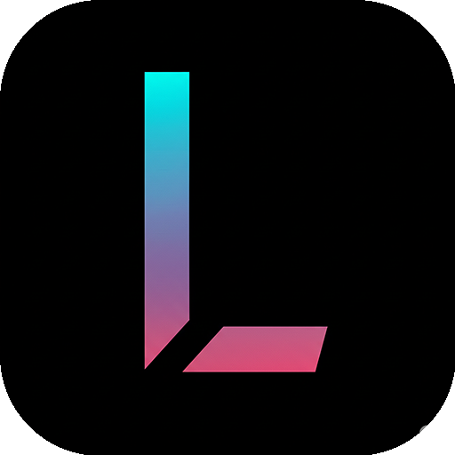

LibreTV
自由观影，畅享精彩
搜索结果
0 个结果
豆瓣热门
请从搜索或豆瓣热门中选择视频播放
观看历史
设置
数据源设置
已选API数量：0
自定义API
功能开关
过滤"伦理片"等黄色内容
关闭可减少旧版浏览器卡顿
配置管理

LibreTV
LibreTV 是一个免费的在线视频搜索平台，提供视频搜索和播放服务，致力于为用户带来最佳体验。
版本信息
当前版本
v2.0.0
更新日期
2024年12月
项目特色
完全免费
无需注册，无广告干扰，完全免费使用
多源搜索
聚合多个视频源，提供丰富的内容选择
响应式设计
完美适配手机、平板、电脑等各种设备
豆瓣热门
集成豆瓣热门推荐，发现优质内容
免责声明
服务性质： LibreTV 仅提供视频搜索服务，不直接提供、存储或上传任何视频内容。所有搜索结果均来自第三方公开接口。
用户责任： 用户在使用本站服务时，须遵守相关法律法规，不得利用搜索结果从事侵权行为，如下载、传播未经授权的作品等。
版权声明： 本平台仅用于提供在线视频搜索与播放服务。所有数据均由第三方接口提供，我们不会存储或追踪用户信息。